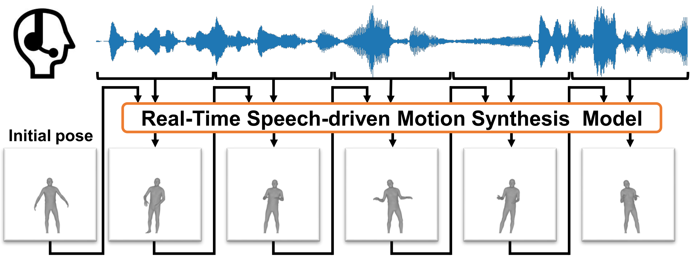

The paper link is a placeholder and will be filled in upon publication. The training and inference code will be added to the repository upon acceptance.

Co-speech motion is essential for interactive avatar-mediated communication. Real-time speech-driven motion synthesis allows speakers to present motion aligned with their speech without requiring tracking devices. In this paper, we propose RTSMotion, a Real-Time Speech-driven Motion synthesis method that requires no transcripts, avoiding the latency of streaming ASR. All modules are designed to be causal, excluding future frames of the input audio. We adopt Mamba for temporal modeling and Region Attention for coordination among body regions. In our experiments, we train and evaluate the model on the BEAT2 dataset. RTSMotion achieves the best scores on objective metrics while maintaining a synthesis latency of approximately 160 ms. In the subjective evaluation, RTSMotion achieved naturalness comparable to a streaming method while running at a lower Real Time Factor.
Five clips from the paper's user study. Muted & looping — unmute in-player for audio.
These clips were presented in the user study with 45 participants reported in the paper. For GestureLSM and Miburi, we used the publicly available checkpoints.
This page and the work it presents are for non-commercial academic research only.